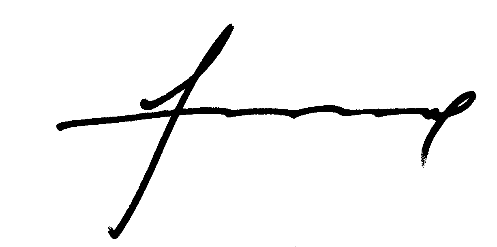

Federação
Boas Vindas
A Direção da Federação Portuguesa de Minigolfe saúda os restantes órgãos sociais da federação, todos os seus associados e todos amigos da modalidade.
Considerando as circunstâncias excecionais de que se reveste este mandato de apenas dois anos, o objetivo principal, e quase único, desta direção é o de recuperar o mais breve possível o Estatuto de Utilidade Pública Desportiva para a federação.
Contudo, não se poderão descurar as atividades normais da federação. Por isso, iremos manter com normalidade a execução de todo o calendário desportivo, aprovado em Assembleia Geral de 25 de novembro de 2017, e daremos o apoio possível à formação, às seleções e aos atletas surdos que irão disputar os Campeonatos da Europa.
Sendo esta uma fase muito complicada na vida da federação, pelo facto de ter perdido a UPD, e também por ter estado mais de um ano sem qualquer contacto institucional com as entidades que nos tutelam, Secretaria de Estado e IPDJ, é necessária a união de todos no apoio a esta direção para que se consiga recuperar a UPD e, também, a credibilidade junto das entidades oficiais.
Contamos com todos e todos podem contar connosco.
Fevereiro 2018
O Presidente da Federação Portuguesa de Minigolfe
Ananias D.C. Quintano
História
A Federação Portuguesa de Minigolfe (F.P.M.) foi fundada em 17 de março de 1977 tendo como impulsionadores o Clube Minigolfe do Porto, o Minigolfe Clube de Portugal e Cálidas Clube de Caldas de Vizela. Em outubro de 1994 foi concedido à Federação Portuguesa de Minigolfe, por despacho governamental, o Estatuto de Utilidade Pública Desportiva.
Desde a sua fundação a FPM é responsável pelo calendário desportivo nacional, organizando todas as provas que dele constam. Campeonato Nacional Individual, Campeonato Nacional de Equipas, Taça de Portugal, provas para pessoas com Deficiência apoiando, também, as provas organizadas pelos clubes. A nível internacional a FPM organizou, em todo o país diversas provas internacionais:
- 1981 - Campeonato Europeu de Homens e Senhoras, Vilamoura;
- 1998 - Campeonato Europeu de Homens e Senhoras, Porto;
- 2000 - Campeonato Europeu de Juniores, Lamego;
- 2005 - Campeonato Europeu de Juniores, Pombal;
- 2005 - Taça das Nações de Juniores, Pombal;
- 2009 - Campeonato Europeu de Seniores, Lamego;
- 2009 - Taça das Nações de Seniores; Lamego;
- 2012 - Campeonato da Europa de Homens e Senhoras, Porto;
- 2012 - Taça das Nações de Homens e Senhoras, Porto;
- 2012 - Taça da Europa de Clubes, Vizela;
- 2013 - Campeonato da Europa de Juniores, Portel;
- 2013 - Taça das Nações de Juniores, Portel;
- 2016 - Campeonato da Europa de Homens e Senhoras
- 2016 - Taça das Nações de Homens e Senhoras, Vizela;
- 2016 - Campeonato da Europa de Sub-23, Porto.
Em 2018 a FPM será responsável com o Clube de Minigolfe da Costa Nova, a ADA-Portel, a Câmara de Portel, o Clube de Minigolfe do Porto e a freguesia da Foz pela organização de mais três provas internacionais no nosso país:
- Maio - Campeonato da Europa para surdos, Costa Nova;
- Agosto - Campeonato da Europa de Seniores, Portel;
- Outubro - Taça da Europa de Clubes, Porto.
Aos longos dos últimos anos tem sido uma preocupação e uma prioridade desta federação a divulgação e a formação de atletas.
Na divulgação além dos meios habituais tem sido uma preocupação levar a Taça de Portugal a locais que, embora tenham campo, não têm equipas formadas. Esta é, também, uma tentativa de alargar o número de atletas e de implementação da modalidade em mais locais do país.
Na formação, tem sido implementado um programa de apoio através dos clubes e, também, através dos gabinetes de desporto das câmaras municipais, com muitas das quais foram assinados protocolos de cooperação. Ainda na formação, foi dado apoio em várias escolas, através de professores responsáveis pelo Desporto Escolar.
Quer nas escolas, quer nas autarquias foram colocados à disposição kits desmontáveis de minigolfe e apoio técnico.
Nestes contatos de formação nas escolas, autarquias e clubes, tem havido uma preocupação suplementar, a de chamar para a modalidade mais atletas femininos.
A partir do 2015, iniciamos uma parceria, através de protocolo, com a Federação Portuguesa de Desporto para pessoas com Deficiência. Essa parceria está a começar a dar os seus frutos, pois já foi realizado o primeiro torneio para pessoas com deficiência, em Vizela. Também já em 2017 foram ao campeonato da Europa para surdos dois atletas portugueses, campeonato este que, como já dissemos, este ano vai realizar-se em Portugal.
Outra preocupação, sobretudo nos últimos anos, tem sido a preparação e o envolvimento das seleções de todas as categorias nas competições internacionais. Para isso tem sido efetuado um esforço financeiro grande. Desde 2006 que o país tem sido representado nos campeonatos da Europa com seleções masculinas e femininas. As nossas seleções, que até aqui apenas esporadicamente participavam em provas internacionais e às suas expensas, começaram a partir de 2006 a aparecer regularmente a essas provas:
- 2006 - Campeonato da Europa General Class, Geldrop (Holanda);
- 2007 - Campeonato da Europa General Class, Canegrate (Italia);
- 2008 - Campeonato da Europa de Seniores, Predazzo (Italia);
- 2009 - Taça das Nações de Seniores, Lamego;
- 2009 - Campeonato da Europa Seniores, Lamego;
- 2009 - Campeonato da Europa de Juniores, Waldshut (Alemanha);
- 2010 - Campeonato da Europa General Class, Predazzo (Italia);
- 2010 - Campeonato da Europa de Seniores, em Cheb (Republica Checa);
- 2011 - Campeonato do Mundo General Class, Estocolmo (Suécia);
- 2011 - Campeonato da Europa de Seniores, Kunzell (Alemanha);
- 2012 - Taça das Nações de General Class, Porto;
- 2012 - Campeonato da Europa General Class, Porto;
- 2012 - Campeonato da Europa de Juniores, Bad Munder (Alemanha);
- 2012 - Campeonato da Europa de Seniores, Antuérpia (Bélgica);
- 2012 - Taça das Nações de Juniores, Portel;
- 2013 - Campeonato da Europa de Juniores, Portel;
- 2014 - Campeonato do Mundo de Juniores, Lathi (Filândia);
- 2014 - Campeonato da Europa de Seniores, Murnau (Alemanha);
- 2015 - Campeonato da Europa de Juniores, Ostrava (Republica Checa);
- 2015 - Campeonato da Europa de Seniores, Askim (Suécia);
- 2016 - Taça das Nações de General Class, Vizela;
- 2016 - Campeonato da Europa General Class, Vizela;
- 2017 - Campeonato Mundial de Surdos na Croácia
- 2017 - Campeonato da Europa de Seniores, Cheb (Republica Checa);
É propósito desta federação continuar a tentar captar para a modalidade um número significativo de atletas, através das estruturas atrás descritas e outras, para poder ter o lugar que merece no desporto nacional.
Consideramos que a modalidade é de relevo para a divulgação do país pela presença dos nossos atletas nas provas europeias e mundiais e, também, pelo elevado numero de provas internacionais que esta federação organiza em Portugal.
Fevereiro de 2018
Missão
O conceito de federação desportiva e o que deve ser a sua missão está claramente definido no artigo 2º do Decreto-Lei 248/2008 com as alterações introduzidas pelo Decreto-Lei 93/2014.
Nesse sentido, a Federação Portuguesa de Minigolfe é uma pessoa coletiva constituída sob a forma de associação sem fins lucrativos que, englobando clubes e associações de âmbito territorial, praticantes, técnicos, juízes e árbitros, e demais entidades que promovem, praticam e contribuem para o desenvolvimento da modalidade.
A Federação Portuguesa de Minigolfe, tal como está contemplado nos seus estatutos, preenche os objetivos gerais definidos pelo referido Decreto - Lei promovendo, regulamentando e dirigindo o minigolfe, representando os seus associados perante a Administração Pública, representando o minigolfe junto das organizações internacionais e assegurando a participação das seleções nacionais.
Fevereiro de 2018
Órgãos sociais
MESA DA ASSEMBLEIA GERAL
| Presidente | Luís Miguel Caeiro Tojo |
| Vice-Presidente | Maria Isabel Pereira Gancho |
| 1º Secretário | Maria Fernanda Lúcio Manso |
| 2º Secretário | Ana Luísa Catela Quintano |
DIREÇÂO
| Presidente da FPM | Ananias Delfim Courelas Quintano |
| Vice-Presidente | António dos Anjos Pinto |
| Diretor para Juventude | Jorge Miguel Esteves Alberto |
| Diretor para Divulgação | Luísa Maria Santos Guerreiro |
| Diretor para Comunicação Social | Mário Augusto Gragado Monginho |
| Diretor Financeiro | Rute Isabel Farinha |
| Secretário | Nuno Mendes |
CONSELHO FISCAL
| Presidente | Maria Luísa Farinha |
| Secretário | Luís Jorge Catela Quintano |
| Relator | Maria Fernanda Maurício Mendes |
CONSELHO DE ARBITRAGEM
| Presidente | Domingos Manuel Santos Silva |
| 1º Vice-Presidente | Joaquim Batista Costa |
| 2º Vice-Presidente | Edgar Reinaldo Oliveira |
| 1º Vogal | José Gabriel Polido Mocho |
| 2º Vogal | Ricardo Jorge Esteves Alberto |
CONSELHO DE DISCPLINA
| Presidente | Ana Beatriz Mayorgas Pérez Cardoso |
| Vice-Presidente | Maria Henrique Santana |
| Vogal | Silvino Neves Costa |
CONSELHO DE JUSTIÇA
| Presidente | Joaquim Manuel Vital Ruivo |
| Vice-Presidente | Rita Fernandes Paias |
| Vogal | Maria Etelvina Alberto |
Estatutos e Regulamentos
Atas da Assembleia Geral
Em construção...
Planos de Atividades
Em construção...
Relatórios e Contas
Em construção...
Contratos Programa
Em construção...